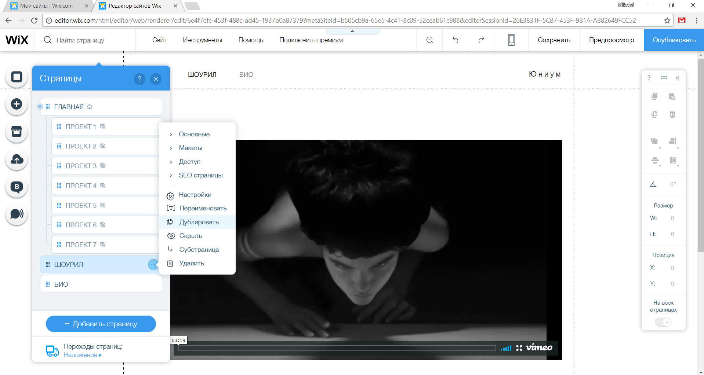

HTML.
HTML (HyperText Markup Language, язык разметки гипертекста) — это система вёрстки, которая определяет, как и какие элементы должны располагаться на веб-странице. Информация на сайте, способ её представления и оформления зависят исключительно от разработчика и тех целей, которые он перед собой ставит.
Интернет — всемирная система объединённых компьютерных сетей для хранения и передачи информации. Часто упоминается как Всемирная сеть и Глобальная сеть, а также просто Сеть.
Кстати, знаешь ли ты, что в 2015 году у 3,3 млрд. человек был доступ к интернету, а это, значит, что каждый второй человек в Мире сидит в интернете и посещает различные сайты.
Сайт, или веб-сайт — совокупность логически связанных между собой веб-страниц. Обычно сайт в Интернете представляет собой массив связанных данных, имеющий уникальный адрес и воспринимаемый пользователем как единое целое.
Человек, который разрабатывает и поддерживает сайты в интернете, называется веб – разработчиком. Это человек, который обладает обширными знаниями в области технологий и устройства сетей. Важно, веб – разработчик не проектирует дизайн сайта, а только «оживляет» его с картинки, который предоставил дизайнер.
Front-end и back-end
Обычно, крупные сайты разрабатываются по системе front-end и back-end.
Front-end разработка – это работа по созданию публичной части сайта, другими словами это то, что видит пользователь в браузере. Чтобы работать Front-end разработчиком, необходимы знания html, css, js.
Back-end разработка – это процесс программирования сайта и наполнения его функционалом. Для работы back-end разработчиком необходимы знания языков программирования, например, php или python.
Фронтэнд передает информацию и команды от пользователя в бэкэнд, тот в свою очередь производит их обработку и отправляет результаты обратно пользователю.
Этапы создания сайта
Перед тем, как сайт увидит «свет» и на него зайдут пользователи, он проходит непростой путь разработки.
1. Определение целей веб-сайта
На этом этапе необходимо определить, для чего нужен сайт, какие задачи он будет решать.
2. Создание технического задания (ТЗ) на разработку сайта
ТЗ является основным документом, на основе которого осуществляются все последующие этапы разработки веб-сайта. В ТЗ еще раз прописывают цели веб-сайта, его структуру, используемые технологии и много-многое другое.
3. Создание макета сайта
На этом этапе дизайнер в специальной графической программе создает дизайн страниц будущего веб-сайта с прорисовкой всех графических (банеров, кнопок, фотографий) и текстовых элементов. Дизайнер создает дизайн веб-страниц с учетом ТЗ и пожеланий заказчика.
4. Верстка сайта
На этом этапе фронтэнд разработчик «оживляет» картинку сайта, которую получил от дизайнера.
5. Программирование сайта
Этап создания ядра сайта, то, как он будет работать и какие функции выполнять. На этом этапе работает бэкенд разработчик.
6. Наполнение сайта
Размещение информации от заказчика на сайте
Практика 1
Придумай концепт своего сайта и пропиши к нему ТЗ.
Конструктор сайтов
Конструктор сайтов – это общедоступный и бесплатный инструмент для редактирования и создания своего собственного сайта. Он даст тебе возможность создать свой интернет сайт на основе готового шаблона, путём добавления готовых блоков на страницу (например, фотогалерея, новости и прочее), так же при помощи него можно настроить собственный дизайн или изменить внешний вид сайта. Что бы пользоваться конструктором, не нужно обладать какими-то специальными знаниями и техническими навыками. Не нужно устанавливать никакого специального программного обеспечения и дополнительного оборудования. Всё что тебе необходимо – это веб браузер.
Онлайн конструктор Wix.com
1. Перейди на сайт wix.com и нажимай «Создать сайт»

2. Удобней и быстрей всего зарегистрироваться через учетную запись Google – просто нажимай кнопку «Продолжить с Google». Если у тебя нет поты Gmail, то ты можешь нажать «Создать аккаунт» и пройти регистрацию используя любую другую почту.

3. Поздравляю, теперь у тебя есть сайт. Если внимательно посмотришь, то слева есть строчка «Домен» - это адрес твоего сайта. Именного его нужно отправлять своим друзьям, если ты хочешь показать свой сайт. Но сейчас сайт выглядит стандартный, мы же хотим сделать свой сайт на тему, которую ты придумал выше. Поэтому кликай по кнопке «Управление» и после перехода по кнопке «Редактировать».


4. Если ты попал на страницу «Вадим Франк» - поздравляю, ты сделал все верно. Давай теперь посмотрим, какие панели управления мы видим.
- Слева панель для изменения и добавления элементов сайта, нам понадобятся только две верхних кнопки – «Фон» и «Добавить»
- Справа панель «Инструментов» с помощью ее ты можешь удалять, копировать, измерять, выравнивать элементы своего сайта. Кстати, саму панель «Инструменты» можно перемещать
- Сверху панель управления, с помощью нее мы сможем добавлять новые страницы на сайт, смотреть изменения и, конечно же, публиковать сайт после изменений

5. Измени фон сайта. Для этого сначала удали стандартную фотографию, воспользуйся панелью «Инструментов» или клавишей «Delete» на клавиатуре и после с помощью кнопки «Фон» на левой панели выбери новый фон, который тебе нравится и подходит для дизайна твоего сайта.

6. С помощью кнопки «Добавить» на левой панели ты можешь разместить на своем сайте картинки, видео, текст, меню и многое другое. Выбери необходимые тебе элементы, и размести у себя на сайте. Кстати, чтобы изменить текст, кликай по нему и пиши свой.


7. Отлично, ты сделал главную страницу своего сайта! Но как же перейти к редактированию остальных страниц? Все просто. Сверху на панели управления кликай на «Страницы: главная» и откроется все меню сайта. И там ты сможешь редактировать другие страницы своего сайта, их названия, а так же добавлять или удалять.

8. Закончи создание своего сайта и нажимай кнопку «Опубликовать».
9. Отлично! Ты сделал свой первый сайт и он опубликован. Обязательно скинь друзьям ссылку на него.
Итоги
Ты только что сделал сайт через конструктор. Но наверняка, когда ты перешел на страницу своего сайта, то увидел панель с рекламой «Wix», которую ты не создавал. Именно это недостаток всех конструкторов сайтов, на них будет реклама, конечно, за деньги ее можно убрать, но это стоит не дешево.
Кстати, кликни на любом сайте правой кнопкой мыши и нажми «Просмотр кода страницы». Откроется так называемый html код страницы – это именно то, что пишут веб-разработчики, когда делают сайт не через конструктор. И на следующем занятие мы с тобой сделаем свой сайт как настоящие веб-разработчики.

Домашнее задание
Разработай концепт сайта для школы/магазина/парикмахерской или другой организации и создай для сайт с помощью конструктора сайтов Wix.com